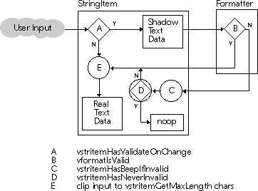

String Item
A string item (vstritem) is a text item subclass that provides the support necessary for fine-grained textual input validation in an application that uses the database services provided by Galaxy. The string item classes can be used in a GUI interface to present a more natural user interaction for the entry of such datatypes as dates and numbers, offering the end-user keystroke- and field-level input validation. Using a string item also gives you the opportunity to observe the proposed new string content before actually allowing the modifying operation to be carried out.
The string item classes include the following:
- vstritem
- vtypeditem
- vboolitem
- vdateitem
- vdoubleitem
- vlongitem
- vulongitem
Relationship to Other Classes
The string item classes closely interact with the Format and Field classes. You may want to refer to those chapters for more information on how the string item classes interface with them.
String Item Concepts
A string item is a dialog item, derived from the text item class, that allows for the validation of its input at the keystroke and field transition level. Some capabilities resulting from development of the string item class are:
- The ability to prevent modifying operations from taking place on the item's textual content, based on the form of the proposed content. In other words, you can first see what the content string would be if the modifying operation were allowed to take place, before deciding whether the operations should be allowed.
- The ability to deal with the item as a string, using the Galaxy String and Scribe functions. This shields you from the complexities of the text data object and text selection.
- Built-in validation feedback facilities that are familiar to the end-user. For example, the ability to generate a audible error tone (beep) when an item is invalid, or to disallow modifying operations that would cause the item to be invalid.
- A basis for the creation of a suite of type-specific derivatives that present a binary typed-value interface (for example, vlongitemSetValue) to support RDBMS forms applications.
String Item Structure
Figure 78. String Item Class Diagram
Figure 79. String Item Interaction Diagram

SetBeepIfInvalid specifies that if the item's string content is determined to be invalid, the item is to generate an audible tone indicating an erroneous condition. Also, SetKeepFocusIfInvalid specifies that the item retains the input focus while it is in an invalid state, forcing the end-user to enter a valid value in the item before moving to the next. Use SetNeverInvalid to disallow any modifying operation that would lead to an invalid state.
SetMaxLength specifies that the item's string content is never to exceed the given number of characters. This feature is useful in situations where the item's content is ultimately destined to reside in an ASCII database field of a known size.
String items include support for acting as proxies for the Field they are observing. When the Field announces that it is null, an observing string item will clear its string content. When the user alters the string and presents it for acceptance, the string item informs the Field of the new value.
Instances of the boolean item class represent a single boolean value. The Increment method simply calls Toggle.
The date item extends the base set of incrementing facilities by adding the ability to modify each of the underlying date's component values independently, including month, hour, and second. Instances of the date item class represent a vdate value.
The default increment key bindings modify the Year component. The other components of a date can be similarly manipulated. The following table present the available keystrokes:
String Item Operations
Configuring a String Item
A string item's behavior can be customized by setting various attributes. For example, use SetValidateOnChange to specify that when the item's string content has changed, the proposed content is to be validated via the Validate method. The default action of the Validate method is to call on the item's formatter, if one has been set, to determine the "validity state" of the input string. The result of any validation is communicated through the Notify method. Associating a String Item with a Field
The Field class, and its type-specific derivatives, are meant to act as the holders of atomic,externally obtained, primitive data such as that commonly retrieved from relational database systems. Any observer can be set to view changes in a field via vfieldInstallObserver. Type-specific String Item Derivatives
The typed item class (vtypeditem) is the base for all type-specific string items that support the increment operation. String items that represent continuous types, such as an integer or date, all respond to CMD - i to increment the item's value up the default amount, and CMD-SHIFT-i to decrease the item's value by the same amount. vlongitem, vulongitem,vdoubleitem, vdateitem, and vboolitem support the increment method.
| Value | Increment | Decrement |
|---|---|---|
| Years | CMD-y | CMD-SHIFT-i |
| Months | CMD-m | CMD-SHIFT-m |
| Weeks | CMD-w | CMD-SHIFT-w |
| Days | CMD-d | CMD-SHIFT-d |
| Hours | CMD-h | CMD-SHIFT-h |
| Minutes | CMD-n | CMD-SHIFT-n |
| Seconds | CMD-s | CMD-SHIFT-s |
Instances of the long item represent a single long integer value. The default increment magnitude is 1.
Instances of the ulong item represent a single unsigned long integer value. The default increment magnitude is 1.
Instances of the double item class represent a double precision value. The default increment magnitude is 1.
All of the type-specific string item derivatives discussed in this section use a formatter of the appropriate type to validate input and provide the right interface for an item's intrinsic datatype. For example, you can assign a date item with a vdate object, or retrieve the date value of the item using the following calls.
- vdate now = vdateCreate();
vdateitem dateItem = vdateitemCreate();
vdateSetToCurrent(now);
vdateitemSetValue(dateItem, now);
Basic Use of String Item
If you were, for example, developing an employee information management application, you would probably require the end-user to enter an employee's birthday. Instead of using a "plain vanilla" text item to capture the date, use a date item. The date item will be configured with a date formatter customized for the current locale.When the end-user indicates that they are finished filling in the form containing the employee's birthday, you can query date item for its current value. The following code sample illustrates this:
- vdate date;
vdateitem dateItem;
vexWITH_HANDLING
{
date = vdateitemGetValue(dateItem);
} vexON_EXCEPTION {
form.tellUser ("Invalid date.");
date = null;
} vexEND_HANDLING;
For example, the DateItem class discussed below assumes that it comes with a LabelItem whose tag consists of the string item tag with the string "Caption" appended. The caption's foreground color will change to indicate the validity of the current input string.
- Red denotes an invalid input
- Yellow indicates a partially valid input
- Blue denotes a valid input.
Example 142. Extending the date item class
vlabelitem *caption;
vcolor *red,
*blue,
*yellow;
// ...
{
vdateitem *dateitem = vdateitemCreate();
//...
/*
* Find a vlabelitem that has our BirthDateItem's name with "Caption"
* appended.
*/
caption = (vlabelitem *) FindOurAssociatedCaption ();
vdateitemSetNotify(dateitem, myNotify);
//...
}
void myNotify (vdateitem *dateitem, int message)
{
if (_caption != null)
{
vcolor *fg = null;
switch (message)
{
case INVALID_MESSAGE;
fg = _red;
break;
case PARTIALLY_VALID_MESSAGE:
fg = _yellow;
break;
case VALID_MESSAGE:
fg = _blue;
break;
}
if (fg != null)
vlabelitemSetForeground (caption, fg);
}
} // myNotify
Controlling User Input
To control end-user modifications to a string item's content, all insertions and deletions are intercepted and routed through two methods, InsertString and DeleteString.
By the time control flow has arrived at these methods, the proposed input string has been filtered through the validation scheme detailed in Figure 79. In the case of InsertString, this is the final opportunity for the user to modify the input string before it is actually inserted into the item's real text data object. The user can now modify the proposed input string. The string item class in the following example filters all non-digit characters from the input stream.
Example 143. Using the string item class to filter non-digit characters from the input stream
vstritemClass *myDigitItem;
{
// ...
myDigitItem = vclassReproduce(vstritemGetDefaultClass() );
vclassSetNameScribed (myDigitItem,
vcharScribeLiteral("myDigitItem"));
vclassSet(myDigitItem, vstritemINSERT_STRING, _myInsertString);
// ...
}
void _myInsertString (vstritem *item, int start, int length,
const vchar *input, int inputLen)
{
vstr *newInput = vstrClone (input);
int ci = 0,
nci = 0;
while (ci < inputLen)
{
if (!vcharIsDigit (input[ci]))
newInput[nci++] = input[ci];
ci++;
}
vclassSendSuper(myDigitItem, vstritemINSERT_STRING,
(item, start, length, newInput,
vcharLength(newInput)) );
}
In this example, you would not need to override DeleteString since InsertString guarantees that the string is made up of digits only. Using String Items in the Visual Resource Builder
Use a string item, and its derivatives, in the Visual Resource Builder just as you would a text item. The string item attributes listed above (SetBeepIfInvalid) can all be set directly from within the properties list in the Object Editor.
Table of Contents
Help Map
Need help? Contact Visix.